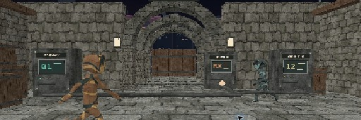

The missing page
“The catalogue goes to print shortly. There’s a plate missing between pages 11 and 13. Fetch it from the archive and send me the complete copy.”
12
Catalogue.pdf11 ▪ ▪ 13 / Page 12 missing

“The catalogue goes to print shortly. There’s a plate missing between pages 11 and 13. Fetch it from the archive and send me the complete copy.”
Awaiting request.